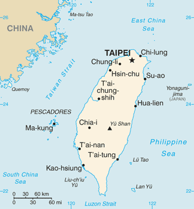

China

Dr. Christopher N. Lawrence
Middle Georgia State University
POLS 2301: Comparative Politics
üîä Disable Narration
Geography
China (officially, the People's Republic of China) is the most populous country in the world, with approximately 1.35 billion people, occupying most of East Asia.
Mainland China also claims the island of Taiwan as part of its territory; however, Taiwan and some neighboring islands are governed today by the Republic of China (ROC) government.
Chinese Language
The dominant language in China is known as Mandarin Chinese; the standard dialect is based on that of the capital city, Beijing.
However, spoken Chinese has many other varieties as well; Cantonese is the dominant language in southern China and is a common language among the overseas Chinese community.
Chinese is typically written using Chinese characters (also known as Han characters), which combine aspects of the meaning and sound of words. These characters are also used in Japanese writing and, to a lesser extent, in Korea.
Romanization
Chinese is often transcribed (romanized) into the Latin alphabet using the Pinyin system, although Pinyin is mostly used in China as a teaching tool or to type Chinese words.
Pinyin is based on the Mandarin spoken language, and some letters don't correspond well to how English-speakers use them. For example, Pinyin ‘j,’ ‘q,’ and ‘x’ are variations of the English ‘ch’ and ‘sh’ sounds.
Historically, there were other ways to transcribe Chinese; many Chinese places are or were commonly known in English using different romanization systems—examples include Peking (now Beijing) and Canton (now Guangzhou).
Early History
The earliest Chinese kingdoms developed along the Yellow River around 4,000 years ago.
Over the centuries, as the population grew and spread out, China became divided into a large number of warring kingdoms.
The first real unified Chinese kingdom, known as the Middle Kingdom, emerged around 221 B.C. under the Qín dynasty.
The Han Dynasty
After the Qín fell in 206 B.C., the Hàn dynasty arose and controlled most of China for the next four centuries.
The Han gradually replaced the feudalistic, aristocratic culture of China with a more centralized, bureaucratic culture, based on the ideas of Confucianism. The civil servants formed a social class at the top of Han society known as the Mandarins, and were selected by competitive examinations.
Although the Han dynasty wasn't China's longest, its influence remains even today; the dominant ethnic group in China are known as the Han, and China remains a heavily bureaucratic state strongly influenced by Confucian values.
Dynastic Cycles
After the Han, a series of other dynasties ruled China, in whole or in part; they continued the practices of the Han. Even invading rulers were assimilated into the dynastic system.
Chinese people believed that the rise and fall of the various empires reflected the Mandate of Heaven: wise and virtuous rulers succeed because they had followed the will of heaven, while despotic or weak rulers had lost their way and were no longer worthy to rule.
Unlike the European concept of divine right, the Chinese did not see the Mandate of Heaven to be carte blanche for rulers to govern as they pleased.
The Ming Dynasty
The Ming dynasty ruled China from 1368 to 1644. Under the Ming, arguably China reached its height of power, even sending ships on voyages of exploration around the Indian Ocean; around 1500, China was more technologically advanced than Europe.
However, the Chinese rulers grew complacent and had limited interest in the outside world. The Chinese lost interest in expanding their territories and their economy.
The Qing and Rising European Influence
Against this backdrop of decline, European explorers and merchants began to seek trade and influence in China. Rather than relating to Europeans on their own terms as they might have a few centuries earlier, the Chinese would meet their European rivals from an inferior position, particularly under the last, Qing dynasty.
The First Opium War
The first major humiliation of China came at the hands of the British in the First Opium War (1839–42). Britain had found a ready Chinese market for opium being grown in India, even though opium smoking was illegal. When the Chinese authorities tried to stop the British from selling opium to its citizens by seizing several million pounds of it, the British objected and went to war.
The Qing were easily defeated, and Britain demanded the cession of the port of Hong Kong and the opening of five other Chinese ports to European trade, along with special privileges for European citizens in China.
The Second Opium War
The Second Opium War (1856–60) went even worse for China. Several imperial palaces were destroyed, additional ports were opened to European trade and Hong Kong was expanded, and the Chinese were forced to recognize Britain, France, and Russia as diplomatic equals by hosting embassies from those states.
Imperial Collapse
The defeats at the hands of the European powers led to internal rebellions, further weakening the Qing dynasty. Japan took advantage of China's weakness, seizing Taiwan in 1894 and gaining influence over Korea at the expense of China.
Within China, foreigners—particularly Christian missionaries—became a target for popular anger. In 1900, participants in the Boxer Rebellion attacked both missionaries and Chinese converts, with support from some elements of the Chinese government. The European powers, along with the United States, intervened to put down the rebellion and extract reparations.
The Republic
In 1911, the Qing dynasty was overthrown by Sun Yat-sen (Pinyin: Sūn Yìxiān), who was a Western-trained doctor, aided by other revolutionaries among the military and government.
They established the Republic of China in the empire's place, and Sun founded the Chinese Nationalist Party or Kuomintang (KMT; Pinyin: Guómíndǎng).
However, China descended into chaos in 1916 as various warlords fought the central government for control of the country. For the next decade, the KMT fought to reunify China.
The Communists
Early on, the KMT had support from the Soviet communists; the KMT was organized along Leninist lines (democratic centralism), and the KMT were taught propaganda techniques by Bolshevik advisers. The KMT included both left-wing and right-wing elements.
However, there was also an indigenous Communist Party of China (CCP), founded in 1921. The CCP and KMT cooperated during the conflict with the warlords, until 1927 when the KMT—led after the death of Sun Yat-sen by right-winger Chiang Kai-shek—expelled communists from his party.
The Long March
Although the KMT gained control of most of the country by 1928, they were unable to eradicate the CCP, who went on the “Long March” in 1934 into the northwest of China to escape being encircled and captured by the KMT army. The Long March left Máo Zédōng as the undisputed leader of the Communists.
War with Japan

The invasion of China by Japan in 1937 forced the Nationalists and the Communists to cooperate again. Japan had already invaded and taken over Manchuria (Manchukuo) in 1931, but the KMT had not put up much resistance as they saw the Communists as a greater threat than Japan.
For the next eight years, the Communists and Nationalists fought on the same side against the Japanese, although they did not really work together; the KMT tended to apply conventional warfare while the CCP's forces favored guerrilla warfare. At times, they even fought each other for control of the inland areas of “free China.”
The Communist Victory
After the Japanese were defeated in 1945, the civil war soon resumed. Although the Nationalists had a better-organized military and superior equipment, the Communists had more popular support and were able to seize key military assets they could use in the war.
By the end of 1949, the KMT was effectively defeated on the mainland, and the Nationalist leadership “temporarily” relocated to Taiwan to continue the fight from there.
Meanwhile, on October 1, 1949, the Communists declared the establishment of the People's Republic of China, with its capital in Beijing.
The Early Communist Years
Like in the Soviet Union, Mao had to decide how to adapt socialism to China. China in 1949 had a huge population outside the cities reliant on subsistence agriculture and barely any heavy industry.
In the first decade, land reform was the major emphasis of the regime. China's involvement in the Korean War (1950–53) in support of the North Korean regime of Kim Il-sung proved costly in manpower and resources, slowing Mao's program of nationalization.
The Great Leap Forward
From 1958 to 1961, Mao led the country on a radical restructuring known as the Great Leap Forward, because he felt the development of socialism was progressing too slowly and Soviet support was declining.
The Great Leap Forward included the forced collectivization of agriculture along with the rejection of old religious and cultural practices. Critics within and outside the Party were purged in the Anti-Rightist Campaign.
Effects of the Great Leap Forward
The effects of the Great Leap Forward were as disastrous as Stalin's similar policies in the USSR had been. Between 30–45 million peasants died from starvation, in part due to a bizarre fixation on steel production in “backyard furnaces” at the expense of farming.
Mao was somewhat discredited by the failure of the Great Leap Forward, which allowed more moderate figures like Deng Xiaoping to advance into leadership positions.
The Cultural Revolution
Within a few years, Mao tried to revitalize Maoist thought in the Great Proletarian Cultural Revolution (1966–76).
During the Cultural Revolution, gangs of youth were organized into the Red Guard, who were used to persecute “revisionists” and anyone else who represented the Four Olds: “old ideas, culture, customs, and habits” of the bourgeoisie.
The targets of the Red Guards were wide-ranging: academics, doctors, farmers, and factory supervisors. Even party leaders were not immune; Deng was among those purged from the party leadership (twice).
Deng Xiaoping
The Cultural Revolution ended with Mao's death and the ouster of the Gang of Four in 1976. The new party leader, Hua Guofeng, restored Deng to his senior party positions.
Deng successfully outmaneuvered Hua to gain control of the party and the country. He embarked on a program of capitalist economic reform—euphemistically called “socialism with Chinese characteristics”—and improving ties with other countries, particularly the United States.
Political Reform: A Bridge Too Far
Deng also was responsible for suppressing the Tiananmen Square protests of 1989. Although the CCP is willing to promote greater economic openness, substantial political reform remains taboo.
China remains a one-party state, with the Communist Party guaranteed a position of leadership in the country by the 1982 Constitution. Like in the USSR, the party and state are deeply intertwined.
A One-Party State
Nominally, a few other parties are allowed to compete for a limited number of seats in the National People's Congress and other elected bodies, but—as was the case in East Germany and other Eastern European countries under communist rule during the Cold War era—these parties are essentially subservient to the CCP and follow the party line.
Within the Communist Party, although there are factions, under the ideal of democratic centralism they generally do not make these divisions obvious in public.
Paramount Leader
Like in the USSR, the formal titles of political figures do not always indicate the power held by Chinese leaders under the CCP system. In general, since Deng, the current supreme or paramount leader has held the posts of General Secretary of the Communist Party of China, President of the PRC, and Chairman of the Central Military Commission.
The current leader of China is Xi Jinping, who has headed the CCP since November 2012. In 2018, the National People's Congress voted to remove the two five-year term limit on service as President of the PRC, indicating Xi plans to remain in charge beyond the approximate ten-year limit his two predecessors followed.
National People's Congress

China's national legislature, the National People's Congress, meets every year for around two weeks in Beijing. With nearly 3,000 members, it is the world's biggest legislature. Approximately 2/3 of the seats are reserved for the CCP, with the remainder of seats held by representatives of the “United Front” parties that are under the thumb of the CCP.
The NPC's members are indirectly elected to five-year terms by the people's congresses of the various provinces, regions, directly-ruled cities, and special administrative regions. Members also represent the People's Liberation Army and, nominally, Taiwan and other territories under ROC control.
Elections in China
The regional and provincial congresses, in turn, are indirectly elected. Although at the very lowest level there are direct public elections, only a few independent candidates are allowed to compete. Registering new political parties, although technically legal, is subject to punishment by state authorities.
In the relatively free special administrative regions of Hong Kong and Macau, which have partially-elected legislative bodies of their own, only CCP loyalists are allowed to choose their delegates to the National People's Congress.
One Country, Two Systems
The two Special Administrative Regions (SARs), Hong Kong and Macau, are part of the PRC, but have substantial internal autonomy and are governed under the laws they had before being returned to Chinese rule (by Britain and Portugal) in the late 1990s. They are guaranteed this status for at least 50 years post-handover.
Although the residents of both territories enjoy more political freedom than mainland Chinese, the PRC resists allowing fully democratic elections and works with local, pro-Beijing politicians at times to try to suppress dissent. The mainland government used the new “National Security Law” to impose a crackdown on the pro-democracy movement in Hong Kong starting in 2020.
Taiwan
The PRC also claims sovereignty over Taiwan, but in practice Taiwan is governed by the remnants of the Republic of China government.
The Nationalists (KMT) operated a PRI-like dominant-party dictatorship on Taiwan until the 1980s.
Subsequent political reforms have made Taiwan a competitive multi-party democracy with a semi-presidential system of government modeled on France's system. The KMT now competes as a center-right party against the center-left Democratic Progressive Party.
Copyright and License
The text and narration of these slides are an original, creative work, Copyright © 2015–24 Christopher N. Lawrence. You may freely use, modify, and redistribute this slideshow under the terms of the Creative Commons Attribution-Share Alike 4.0 International license. To view a copy of this license, visit http://creativecommons.org/licenses/by-sa/4.0/ or send a letter to Creative Commons, 444 Castro Street, Suite 900, Mountain View, California, 94041, USA.
Other elements of these slides are either in the public domain (either originally or due to lapse in copyright), are U.S. government works not subject to copyright, or were licensed under the Creative Commons Attribution-Share Alike license (or a less restrictive license, the Creative Commons Attribution license) by their original creator.
Works Consulted
The following sources were consulted or used in the production of one or more of these slideshows, in addition to various primary source materials generally cited in-place or otherwise obvious from context throughout; previous editions of these works may have also been used. Any errors or omissions remain the sole responsibility of the author.
- Michael G. Roskin. 2015. Countries and Concepts: Politics, Geography, Culture, 13th ed. Upper Saddle River, New Jersey: Pearson.
- Various Wikimedia projects, including the Wikimedia Commons, Wikipedia, and Wikisource.